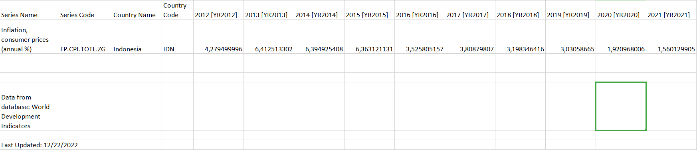
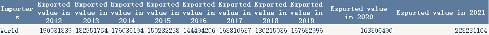
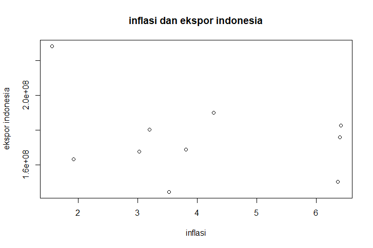
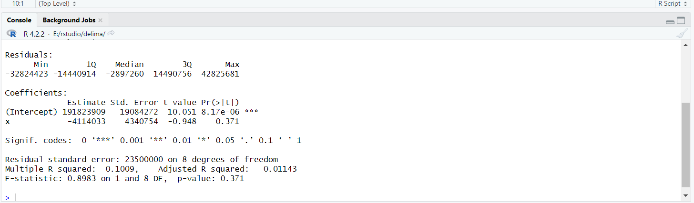

Pengaruh Tingkat Inflasi Terhadap Jumlah Ekspor di Indonesia Dari Tahun 2012-2021
Metode Penelitian Politeknik APP Jakarta

1 Pendahuluan
1.1 Latar belakang
Globalisasi menyebabkan interaksi antar negara semakin mudah dan intense. Hal ini karena setiap negara memiliki kepentingannya masing - masing, salah satunya dalam hal perekonomian. Perekonomian dunia bergantung satu sama lain melalui perdagangan internasional. Kegiatan yang dilakukan yaitu ekspor dan impor. Setiap negara melakukan kegiatan berdagang satu sama lain untuk memenuhi kebutuhan masyarakatnya, dan mencapai kesejahteraan dengan berdagang. Berdagang memiliki banyak manfaat untuk negara salah satunya adalah menambah devisa negara. Pertumbuhan perekonomian negara diukur dari output negara tersebut, ketika kebutuhan di dalam negeru sendiri sudah terpenuhi maka hak yang bisa dilakukan adalah melakukan ekspor.
Perekonomisan negara yang saling bergantung satu sama lain, menyebabkan akan terjadinya inflasi karena nilai tukar mata uang saling bergantungan terlebih dalam perdagangan internasional. Ketika harga tukar suata mata uang mengalami kenaikan, maka akan menyebabkan harga bahan produksi meningkat. Hal ini akan menyebabkan inflasi, inflasi adalah kenaikan harga barang secara terus menerus dalam satu periode. Inflasi akan mempengaruhi ekspor suatu negara, inflasi berbanding terbalik dengan ekspor suatu negara, karena ketika inflasi mengalami peningkatan, ekspor negara akan mengalami penurunun.
Indonesia sebagai negara berkembang tidak luput dari inflasi yang meningkat, harga barang di Indonesia cenderung naik turun setiap periodenya. Hal ini berpengaruh juga terhadap ekspor Indonesia
1.2 Ruang lingkup
Untuk menghindarin pembahasan yang terlalu luas, maka dalam penelitian ini dibatasi dengan rentang waktu mulai dari 2012-2021 yang dimana dalam tahun tersebut peneliti ingin melihat bagaimana inflasi di Indonesia mempengaruhi jumlah ekspor negara Indonesia.
1.3 Rumusan masalah
1. Bagaimana inflasi di Indonesia?
2. Bagaimana ekspor Indonesia dari tahun ke tahun?
3. Bagaimana inflasi dapat mempengaruhi ekspor Indonesia dalam rentang tahun 2012-2021?
1.4 Tujuan dan manfaat penelitian
Penelitian ini bertujuan untuk mengetahui bagaimana inflasi di negara Indonesia berpengaruh terhadap jumlah ekspor negara Indonedia selama tahun 2012 hingga 2021 yang diharapkan dapat menambah wawasan bagi pembaca. Khususnya mahasiswa/I jurusan perdagangan internasional.
2 Studi pustaka
Teori I
Jika diartikan secara sederhana, inflasi adalah naiknya harga barang dan jasa secara terus menerus dalam periode waktu tertentu. Namun didalam kamus (KBBI) inflasi sendiri memiliki arti yaitu kemerosotan nilai mata uang kertas. Sehingga dapat dikatakana jika harga barang dan jasa terus meningkat maka akan terjadi inflasi. Inflasi memiliki 3 jenis yaitu inflasi ringan,sedang, berat, dan hyperinflation. Penyebab inflasi juga bermacam -- macam, dapat terjadi karena tingginya permintaan suatu barang atau jasa, meningkatnya biaya produksi, jumlah uang beredar bertambah, utang nasional, dan masih banyak lagi. Untuk saat ini di Indonesia, inflasi selalu mengalami peningkatan setiap tahunnya. Hal ini terlihat dari harga barang dan jasa di Indonesia yang semakin mahal.
Teori II
Perdagangan internasional adalah kegiatan yang dilakukan dua negara atau lebih untuk memenuhi kebutuhan masing masing dengan cara menjual beli barang dan jasa. Dalam perdagangan internasional terdapata 2 istilah yaitu ekspor dan impor. Ekspor memiliki arti mengeluarkan barang dari daerah pebean keluar daerah pabean. Impor memiliki arti memasukkan barang dari luar daerah pabean ke dalam daerah pabean. Perdagangan internasional menjadi factor penting dalam meningkatkan suatu perekonimian negara. Ekspor dan impor dapat mempengaruhi devisa negara. Indonesia juga ikut dalam praktik perdagangan internasioanal. Indonesia sering melakukan ekspor ke negara seperti China, Jepang, Amerika Serikat, dan negara lainnya. Indonesia juga sering melakukan impor terutama untuk bahan baku produksi yang tidak bisa di dapatkan di Indonesia.
2.1 Kerangka Penelitian
Penulis menggunakan alat bantu berupa R dan Rstudio untuk meregresi data yang diambil dari Trademap dan World Bank Indonesia. Penulis memulai penelitian dengan mencari data-data untuk mengisi format laporan, kemudian data-data yang sudah ditetapkan di regresi menggunakan rstudio yang akan menampilkan hasil regresi untuk di intepretasi dan plot dari regresi. data yang digunakan penulis adalah data impor dari Trademap, World Bank Indonesia, jurnal dan artikel yang ada
3 Metode penelitian
3.1 Data
Berikut data inflasi Indonesia dari tahun 2012 sampai tahun 2021, dapat dilihat bahwa tingkat inflasi di Indonesia bergerak secara fluktuatif
 Berikut adalah data export dari tahun 2012 sampai tahun 2021

3.2 Metode Analisis
Metode analisis yang digunakan adalah kuantitatif, metode ini berfokus pada pengolahan data dari berbagai sumber internet seperti Trade Map dan World Bank Indonesia agara mendapatkan data yang akurat untuk di plottinh secara sederhana menggunakan R dan Rstudi sebagai alat bantu pengolahan data, dengan beberapa package yang digunakan seperti tidyverse, readxl, WDI, dan kableExtra. Package ini berfungsi untuk membantu user untuk melakukan plot dan regresi dan model yang digunakan hanya plotting sederhana agar pembaca lebih mudah memahami
3.3 Pembahasan Masalah
| X | Y |
|---|---|
| 4,28 | 190031839 |
| 6,41 | 182551754 |
| 6,39 | 176036194 |
| 6,36 | 150282258 |
| 3,53 | 144494206 |
| 3,81 | 168810637 |
| 3,20 | 180215036 |
| 3,03 | 167682996 |
| 1,92 | 163306490 |
| 1,56 | 228231164 |
tabel data pengaruh inflasi terhadap ekspor Indonesia.
Data x = inflasi indonesia
Data y = jumlah ekspor Indonesia
berdasarkan dari data-data yang telah dipakai, dapat kita lihat bahwa tingkat inflasi Indonesia berbanding terbalik dengan jumlah ekspor Indonesia. Ketika inflasi Indonesia mengalami kenaikan maka ekspor Indonesia akan mengalami penurunan, sebaliknya jika inflasi Indonesia mengalami penurunan makan jumlah ekspor Indonesia akan mengalami peningkatan.
Plot dari data x dan data y

3.4 Analisis Masalah

Berdasarkan output diatas, model regresinya bisa dilihat dari bagian estimate, yaitu y= 191823909 + (-4114033). Dari uji parsial dengan t-value sebesar -0,948 dan p-value< 0,371 dimana tingkat signifikasi yang digunakan adalah 0.001 memberikan hasil tolak H0:β=0 artinya variabel X (Nilai Inflasi Indonesia) secara signifikan berpengaruh terhadap model.
Nilai koefisien regresi dari X sebesar -4114033 dapat kita interpretasikan bahwa setiap kenaikan nilai X (Nilai inflasi Indonesia), maka nilai Y( Nilai jumlah ekspor Idonesia) akan turun sebesar -4114033
4 Kesimpulan
Setiap negara melakukan perdagangan inernasional untuk kepentingan masing-masing .Perdagangan Internasional kegiatannya mencakup ekspor dan impor . Perekonomian suatu negara akan bergantung terhadap perekonomian negara lain. salah satunya pada indikator inflasi. ketika suatu negara mengalami inflasi maka harga barang di negara lain akan mengalamin kenaikan karena meningkatnya harga produksi suatu barang. inflasi sangat mempengaruhi ekspor suatu negara, hal ini telah dibuktikan oleh penulis dengan meregresi data berupa “nilai inflasi Indonesia dari tahun 2012-2021” dengan data “jumlah ekspor Indonesia dari tahun 2012-2021” yang menghasilkan setiap kenaikan inflasi maka jumlah ekspor Indonesia akan turun.
4.1 Daftar Pustaka
Kursita. (2021). Pengaruh Inflasi Terhadap Ekspor Di Provinsi Sulawesi Selatan [Skripsi, Universitas Muhammadiyah Makasar]. https://digilibadmin.unismuh.ac.id/upload/14625-Full_Text.pdf
World Bank Indonesia. (2022, Desember 22). https://databank.worldbank.org/reports.aspx?source=2&series=FP.CPI.TOTL.ZG&country=IDN#
Trade Map. https://www.trademap.org/Country_SelProductCountry_TS.aspx?nvpm=1%7c360%7c%7c%7c%7cTOTAL%7c%7c%7c2%7c1%7c1%7c2%7c2%7c1%7c2%7c1%7c1%7c1
___________________________________________________________________________________